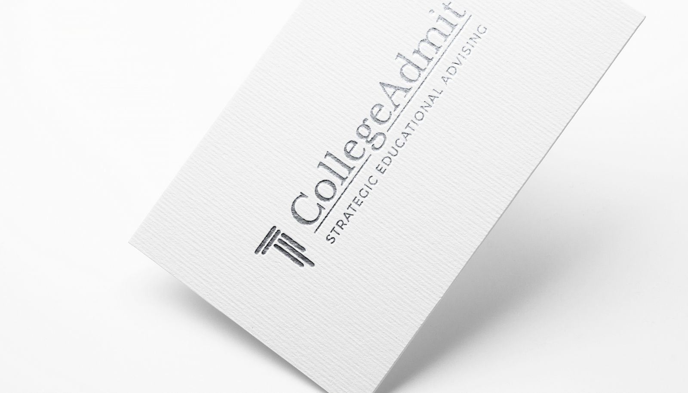

CollegeAdmit
CollegeAdmit was a collaboration with a client who needed to bring a sense of clarity and modern prestige to their niche consulting service. I wanted to move away from the cluttered, heavy aesthetics often found in academic branding to create a look that felt more inviting for their specific clientele. By pairing a contemporary typeface with a minimalist palette, I built an identity that honors scholarly tradition while remaining entirely current. Every design choice was intentional, ensuring the path to higher education looks as clear and sophisticated as the specialized guidance the brand provides.
Brand Identity